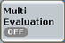

Measurement Control
To turn the measurement on or off, select the control softkey and press ON | OFF or RESTART | STOP. Alternatively, right-click the control softkey.
See also: "Measurement Control"

The softkey shows the current measurement state. Additional measurement substates can be retrieved via remote control.